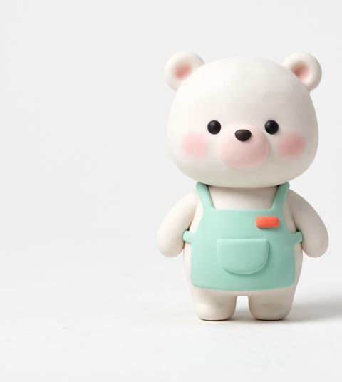
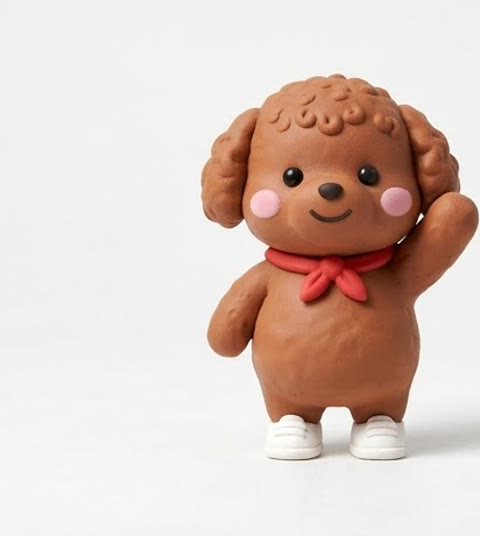
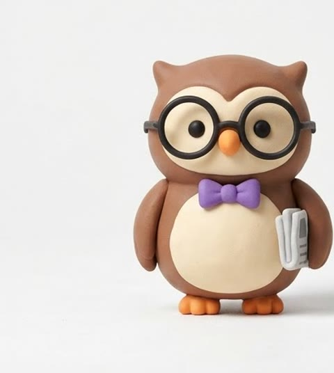

HEALTH SHORTS · ONE-PERSON STUDIO
매일 한 편,
우리 동네
건강 이야기
오스뮤 스튜디오는 유튜브 채널 「건강 반상회 | Daily Well Life」를 만드는 개인 제작 도구예요. 출처를 확인한 대본에 그림과 목소리를 입히고, 말하는 순간에 맞춰 자막을 띄워요.
감기와 다른
독감 신호
독감 신호
🐻 몽글이의 건강정보
HOW IT'S MADE
한 편이 만들어지는 과정
한 사람이 매일 올릴 수 있도록, 반복되는 일은 도구가 맡고 판단은 사람이 해요.
01대본 · 팩트체크
공공기관 · 병원 자료를 출처로 대본을 쓰고, 문장마다 근거를 확인해요. 출처는 영상에도 남겨요.
02그림 · 영상
장면마다 같은 인물 · 같은 옷으로. 움직여야 할 장면만 영상으로 만들어요.
03내레이션
캐릭터마다 정해진 목소리로 읽어요. 읽는 법이 헷갈리는 말은 따로 고쳐요.
04자막
내레이션을 받아써서 낱말마다 시간을 맞춰요. 한국어 · 영어 · 일본어 자막을 함께 준비해요.
05게시 · 기록
게시 화면은 도구가 채우고, 마지막 게시 버튼은 사람이 눌러요. 올린 뒤 성과를 기록해 다음 편에 반영해요.
NEIGHBORS
반상회의 네 이웃
주제마다 안내하는 이웃이 달라요. 처음과 끝에서 인사하고, 중간엔 살짝 고개만 내밀어요.

몽글이몸이 보내는 신호냠냠이식탁에서 바꾸는 한 가지

멍뭉이의자에서 따라 하는 운동
척척이새 연구 · 계절 건강 소식


PRINCIPLES
지키는 원칙
🔒
데이터는 내 컴퓨터에만작업 파일 · 연결 정보는 운영자 컴퓨터에만 저장해요. 서버나 클라우드에 올리지 않아요.
✋
게시 버튼은 사람이도구는 게시 화면을 채우는 데까지만. 올리고 지우고 공개 범위를 바꾸는 일은 사람이 해요.
📚
겁주지 않고, 출처와 함께일반 건강 정보로, 진단 · 치료를 대신하지 않아요. 증상이 계속되면 의료진과 상담하도록 안내해요.